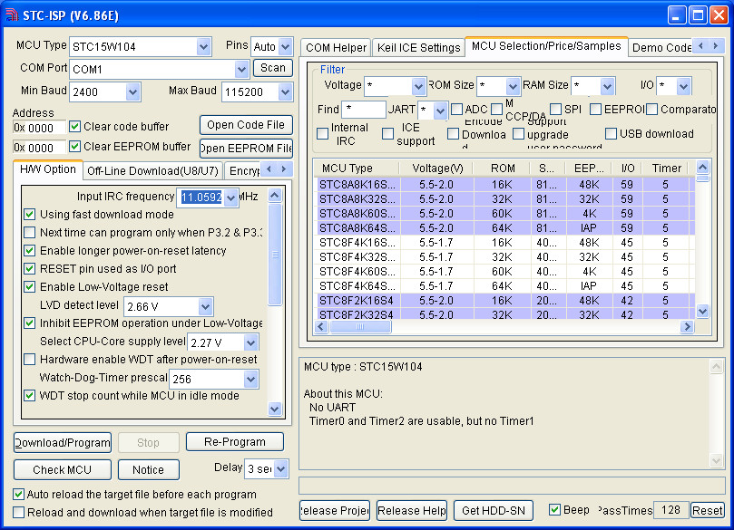

參考資訊：
http://plit.de/asem-51/
http://www.stcisp.com/stcisp620_off.html
https://sourceforge.net/projects/mcu8051ide/
ASEM-51
$ cd $ wget http://plit.de/asem-51/asem51_1.3-2_i386.deb $ sudo dpkg -i asem51_1.3-2_i386.deb $ asem
MCU8051IDE
$ sudo apt-get update $ sudo apt-get install mcu8051ide
MSC-51
$ git clone https://github.com/wojtekka/asm51 $ cd asm51 $ make
司徒目前使用STC原廠燒錄軟體STC-ISP(STC15W104可以直接使用UART燒錄)
